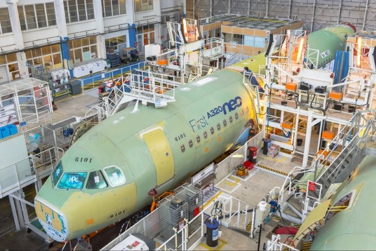

Producteur
Dans ce monde il y avait un peu près 10 compagnies qui produisaient des avions de lignes.
En ce moment les plus grands producteurs d’avion sont Airbus et Boeing.
95% des avions de lignes produits dans le monde entiers sont soit un avion Airbus ou Boeing.
Cependant il y a aussi des petites compagnies qui produit des petits avions de ligne comme Bombardier ou Embraer.
Airbus : Airbus est une société qui produit des avions fondés par plusieurs pays européens le 18 décembre 1970.
Il est l’un des plus grands producteurs d’avions de ligne dont le a320, a300, a330 ou encore a380.
Boeing : Boeing est une société qui produits des avions fondés par William E. Boeing en 1916.
C’est l’un des plus grands producteurs des avions de ligne.
Les avions les plus connus de Boeing sont b747, b777, b787 ou encore le b737 max.
Embraer (Empresa Brasileira de Aeronáutica) est un constructeur d’avion de ligne de moyenne taille brésilien.
Il est fondé en 1969 par le gouvernement brésilien.
Les principaux avions produit par Embraer sont des jets régionaux comme le e170, e190, e195 qui peut accueillir de 70 à 110 passagers.
Embraer produit également des avions d’affaires et militaires.
Bombardier est une société canadienne qui produit des trains et des avions. Ce train du CFF est produit par Bombardier:
Maintenant, la plupart des avions de bombardier produits par eux même n’appartient plus à eux à cause des situations financières.
Les cseries , leurs plus gros avions, devient maintenant sous forme de A220, qui a été acheté par airbus en 2018.